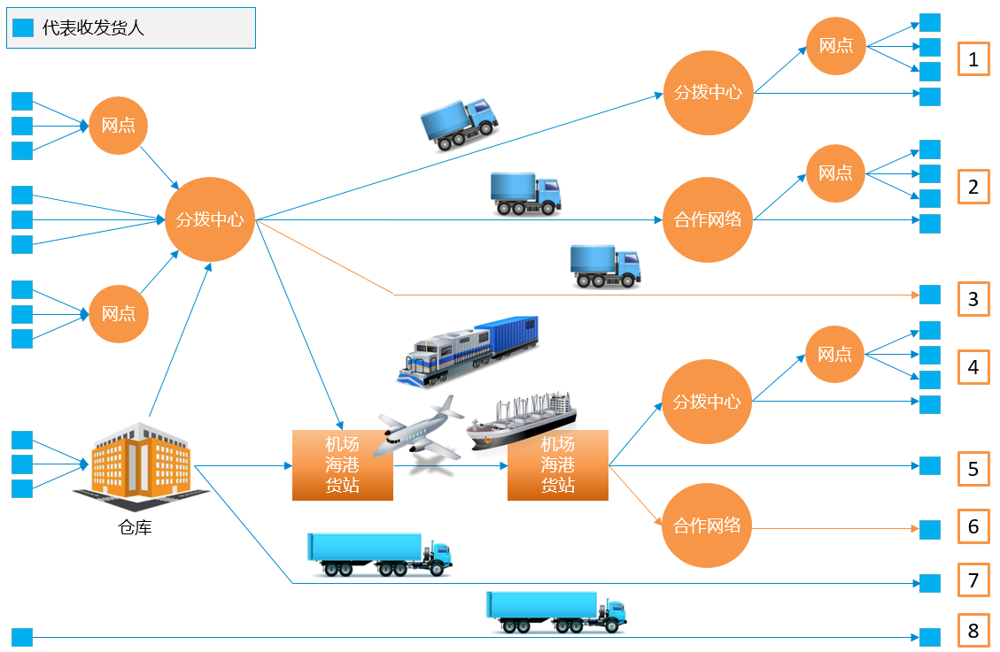

国民经济的飞速发展过程中，各种业务主体对于物流的需求也在不断提高，从原来单一的物流服务需求，逐渐演变成了对仓储、配送、公路、海运、铁运以及多式联运、供应链管理等多种物流服务的综合性的需求，多样性和综合性的需求也带来了更大的管理难度，对于支撑业务运作的IT系统也有着更高的要求。
综合物流将多种运输方式进行组合，连接起铁路货站、公路货站、航空货站，形成跨越区域广泛的综合型物流网络，能够同时满足仓储、配送、公路、海运、铁运以及质押监管等多种物流业务的需求。，帮助企业打造优质的服务平台，提升综合竞争能力。
综合物流运营模式分析如下：

4PNT综合物流运营管理信息化方案综合分析行业运营模式，发货人通过网点或仓库完成前端集货，通过分拨中心货物进入干线运输，达到目的城市后，借助多级分拨中心和网点完成末端的运输和配送；发货人完成前端集货后，通过各种运输方式将货物从启运地运往目的地，抵达目的地后，借助短驳、各级运输网点及网络将货物运送至收货人手中。整个过程包括了自营方式、委外方式和多种运输方式的灵活组合。